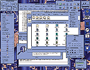
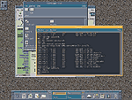
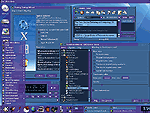
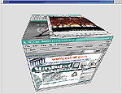
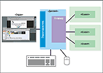
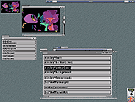
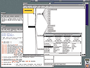
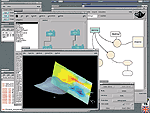
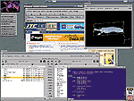

Масштабность X Window как программного проекта выражается даже не
столько объемом кода (хотя последний впечатляет и нарушает каноническое
представление о непригодности языка программирования C для создания
больших систем -- более 1,5 млн. строк), сколько бездной, отделяющей
временную отметку начала и масштаб проекта от его сегодняшнего состояния.
Не углубляясь в исторические дебри, уделим несколько строк
короткой исторической справке. Первые десять (!) версий X Window
создавались фактически всего тремя людьми -- Робертом Шейфлером (Robert
Sheifler), Джимом Геттисом (Jim Gettys) и Роном Ньюменом (Ron Newman). Три
"основоположника" представляли в разумной пропорции главные движущие силы
технологического развития IT-индустрии -- академическую науку (двое -- из
Массачусетского технологического института, MIT) и знаменитую в те давние
времена своими инновациями корпорацию DEC. Еще один примечательный
исторический момент -- технологическая трансформация, которую претерпела
система на ранних этапах развития. Возможно, что без нее вся история X
Window, как действительно удачного (хоть и спорного) программного проекта,
потеряет всякий "вкус". Все дело в том, что в далеком 1984 году первый
разработчик X Window использовал весьма привлекательный и совершенный по
сегодняшним меркам... объектно-ориентированный язык программирования CLU.
И только затем совсем молодой проект был перепрограммирован на
"компьютерной чуме XX века" -- языке C. Факт "сдачи технологических
позиций" и последовавший за ним успех системы мы пока обсуждать не будем,
как и мотивацию разработчиков X Window. Воспримем это пока как ошибку --
впоследствии мы подробно поговорим о "секретном" оружии, использовавшемся
как при проектировании, так и при реинжениринге системы, и позволившем
спасти проект от, казалось бы, неминуемого поражения со стороны главного
врага программиста -- сложности.




Эволюция пользовательских интерфейсов, построенных на основе X
Window, наглядно доказывает преимущество выбранного разработчиками
системы подхода. Свобода в определении политик и простота
использования механизмов позволили X Window ПО пройти эволюционным
путем от внешне примитивного вида OpenLook к де-фактно стандартному
экранному представлению примитивов пользовательского интерфейса
Motif, к гибко настраиваемому современному виду KDE и, наконец, к
прообразам трехмерного интерфейса
Начиная с
11-й версии системы, той, с которой сегодня имеют дело многочисленные
пользователи рабочих станций под управлением ОС Unix или ее клонов, проект
X Window утратил характер "малой рабочей группы" и превратился фактически
в транснациональную смешанную академическо-корпоративную организацию,
расширившую представительство со стороны академической науки
университетами Карнеги-Миллан и Беркли, а со стороны корпоративного
сектора -- компаниями Sun, Hewlett-Packard, Siemens, Stellar, Tektronix,
Wyse, BBS... (список слишком велик, чтобы его целесообразно было
продолжать).
В нашем коротком историческом обзоре остался упущенным
один важный момент -- название. Действительно, почему именно "X"? И
наступило время для первой оговорки -- "основоположники" X Window,
естественно, "стояли на плечах гигантов". Несмотря на то что разработки их
предшественников канули в Лету, не упомянуть имен этих программистов автор
не может. Заодно мы найдем и объяснение "тайне" названия системы. А она,
как это водится, весьма прозаична: "X" -- потому что в английском алфавите
эта буква следует за буквой "W". А вот графическую подсистему W, сегодня
полностью забытую, создали в Стэнфордском университете два талантливых
программиста (впоследствии ставших сотрудниками исследовательских
лабораторий DEC) -- Поль Асентэ (Paule Asente) и Брайан Рейд (Brian
Reid).
Что же такое X Window?
Увы, короткий ответ на
этот вопрос найти трудно (если вообще возможно) по одной простой причине
-- X Window настолько насыщенная и разносторонне функциональная система,
что любой краткий ответ гарантированно будет страдать неполнотой.
Начнем с того, что X Window подразумевает четкое разделение между
двумя программными артефактами -- спецификациями и реализацией этих
спецификаций. И спецификации X Window, и многие их конкретные реализации
исторически были открытыми документами -- в подобных случаях исходные
тексты программ часто имеют "образцовый" (reference) характер и, несмотря
на принципиальную "вылизанность" и работоспособность, все же являются в
большей степени документом, чем "исполняемой сущностью".
С
функциональной точки зрения X Window часто называют "не зависящей от
платформы растровой графической оконной системой, обеспечивающей
прозрачное использование ее ресурсов с помощью сетевых соединений". В этом
определении кроется много ответов на много вопросов, но все же далеко не
все. Очевидно, что X Window работает только с растровыми устройствами
отображения информации, очевидно, что система образует некоторый
дополнительный, более высокий по сравнению с примитивным понятием
"пиксел", уровень абстракции -- "окно", ну и, наконец, X Window
обеспечивает удаленное использование ресурсов графической подсистемы.
Расхожее определение оставляет вне поля зрения идеологическую основу X
Window -- "врожденную" поддержку взаимодействия между разными программными
компонентами, выполняющимися в разных защищенных областях памяти одного
компьютера или на разных компьютерах -- характерную особенность систем
класса middleware. Скрытая в упоминании о сетевых "способностях" X Window
суть на деле означает, что система является, выражаясь современными
терминами, распределенной клиент-серверной. И наконец, такое простое
понятие, как "растровый", куда сложнее, чем это может показаться на первый
взгляд. С 1984 г. растровые графические системы неузнаваемо изменились, а
X Window продолжает работать фактически на любом вычислительном
устройстве, обладающем графической подсистемой. И при этом X Window
надежно защищает порой бесценные разработки программистов прошлого от
влияний этих изменений, гарантированно обеспечивая работоспособность даже
очень старых, но не утративших актуальности программ. Возможно,
пользователю современного ПК упоминание подобного достоинства покажется
надуманным, а напрасно -- мир компьютеров все-таки был, есть и будет очень
разнообразным. Да и действительно хорошие программы остаются таковыми,
несмотря на их "преклонный" возраст.
Принципы и
инструменты
Наступила пора "выстрелить" секретному оружию, о
котором было упомянуто. Авторы "неоклассических" толкований искусства
программирования небезосновательно утверждают, что предел сложности
реализуемого на языке C проекта составляет несколько сотен тысяч строк
исходных текстов. Наиболее строгая оценка -- 100 тыс. строк. За этим
пределом программный проект становится неуправляемым, утрачивает
пригодность к реинжинирингу, и затраты на его сопровождение астрономически
возрастают. Все эти оценки, естественно, не взяты "с потолка" и отражают
опыт создания реальных программ. Но действительность слишком многогранна,
чтобы они были той самой правдой, которая "всегда одна". X Window -- яркий
пример "другой правды" -- упорно нарушает неоклассические каноны. И, как
ни странно, благодаря элементарным "секретам". Впрочем, давайте
прислушаемся к самим разработчикам X Window, а именно, к принципам и
подходам, которые использовались ими при проектировании системы, благо,
никаких тайн в открытом проекте нет. Эти "выжимки" из стандартной
документации X Window (естественно, не в дословном переводе) можно смело
называть "Евангелием X".
Главный принцип "основоположников" X
Window -- строгое соблюдение простого правила: потребность в изменениях
системы определяется выполнением необходимых условий. Для конкретики
программного проекта этот же общеинженерный принцип (заимствованный из
конфуцианства) можно перефразировать так: не создавать добавочную
функциональность, пока имеющаяся достаточна для решения задач, стоящих
перед системой.
Второй принцип -- "от обратного" -- также
заимствован из классики инженерной практики и заключается в предпроектном
поиске четкого ответа на вопрос "чем не будет являться проектируемая
система?". Удачный ответ на него позволяет точнее определиться и с
назначением проектируемой системы, и избежать безуспешных попыток создать
"абсолютную систему, реализующую все".
Третий принцип устраняет
недостаток любого проекта, слепо выполненного по первым двум правилам, --
"жесткость" или "косность". Действительно, предыдущие принципы слишком
строгие, поэтому для развития и жизнеспособности проекта необходимо
предусмотреть простой и эффективный механизм расширения функциональности,
принципиально гарантирующий сохранение всех свойств базовой системы.
Четвертый принцип -- это целая философия, но между тем он прост и
также не нов для инженера: "единственное, что хуже обобщения, основанного
на одном реальном факте, -- это обобщение, основанное на отсутствующих
фактах или предположениях". В проекте X Window соблюдение этого принципа
было исключительно важным фактором из-за... объектно-ориентированного
подхода при проектировании.
Пятый принцип -- принцип здравого
смысла: "если проблему невозможно полностью понять, лучше не пытаться
предлагать ее решений".
Шестой принцип -- "ленивой эффективности":
если для достижения 90% желаемых показателей эффективности системы нужно
затратить всего 10% ресурсов, достижение оставшихся 10% эффективности
целесообразно просто игнорировать. Или, иначе, простое решение, всего на
10% менее эффективное, но более надежное и доступное для понимания (а
значит, и более долговечное), предпочтительнее, чем сложное, независимо от
его эффективности. Это правило также является классикой инженерного
проектирования и имеет не только более чем вразумительные обоснования в
теории многокритериальной оптимизации, но и богатейшую базу практических
доказательств. К последним, например, относится ОС Unix, разработчики
которой никогда не стремились к "выдающимся" показателям
производительности своего детища, что исключительно положительно сказалось
на жизнеспособности ОС как программного проекта.
Седьмой принцип
также общеизвестен -- его называют по-разному, но мы будем придерживаться
оригинальных терминов X Window -- "изоляция сложности". Учитывая
объектно-ориентированное проектирование системы и ее глубинные ООП-корни
(первый язык реализации -- CLU), здесь можно было бы ограничиться термином
"инкапсуляция" и... ввести читателя в заблуждение. Разработчики X Window
под "изоляцией сложности" понимали вполне определенное свойство,
основывающееся на рациональном и очевидном соображении: систему, состоящую
из множества взаимодействующих друг с другом частей (компонентов) трудно
понять и еще труднее модифицировать (сопровождать). Соответственно,
принцип "изоляции сложности" означает не только и не столько "упрятывание"
функциональности в "компонентные" или объектные "обертки" (что,
собственно, и называется инкапсуляцией), сколько максимальное сокращение
связей между компонентами -- даже за счет "перекладывания" ответственности
за часть функциональности на разработчиков приложений.
И последний
принцип, за который яростно ругают X Window, -- "принцип свободы",
предусматривающий реализацию исключительно механизмов, а не политик
использования этих механизмов. Так как X Window является подсистемой,
"ответственной" за взаимодействие человека с компьютером, то "принцип
свободы", в частности, означает возможность самостоятельного выбора
пользователем (или разработчиком) политик использования/реализации
графического интерфейса.
Итак, "Евангелие X" завершилось. Но семь
достаточно очевидных инженерных принципов -- это, естественно, не все, что
гарантировало успех проекта. Вторая составляющая успеха -- использованные
инструментальные средства. Им можно посвятить не одну отдельную статью (а
некоторым -- не одну книгу), поэтому здесь остается только заметить --
истории о гуру, с реактивной скоростью "отстукивающих" в терминальных
редакторах по несколько тысяч строк абсолютно гениального кода в день, к X
Window имеют весьма отдаленное отношение, разве что к самому раннему
периоду разработки. Сложность есть сложность... и в ход давным-давно
пущена "тяжелая артиллерия" программной инженерии (software engineering)
-- метаязыки описания модульной структуры проекта, поддерживающие
автоматическую генерацию тестов и автоматическое тестирование,
трассировщики выполнения программ с графическим выводом результатов,
специализированные библиотеки контроля за управлением памятью и т. д. и т.
п. Короче говоря, вся та атрибутика, которая сегодня считается чуть ли не
уникальной для "суперсовременных" интегрированных сред разработки.
Белое и черное

Концептуальная схема X Window
Как любой
большой и долгоживущий программный проект, имеющий к тому же и смешанный
инструментально-системный характер, X Window обладает массой весьма
специфических достоинств и недостатков. Говорить о преимуществах этой
системы трудно -- не потому что их нет, а из-за ее большой
"разноплановости", допускающей множество точек зрения.
Но некоторые
достоинства очевидны -- X Window работает, X Window хорошо работает (в том
числе и в первую очередь -- в приложениях mission critical), X Window
работает на всем, "что движется", X Window развивается, и наконец, X
Window остается уникальной системой, для которой нет реальной альтернативы
с 1984 г.
Недостатки системы охарактеризовать намного проще --
они, как говорится, у всех "на слуху". X Window ругают обоснованно и
необоснованно, но чаще всего ругают конкретные реализации системы.
Исторически первый прецедент обоснованной критики был связан с сетевым
характером X Window и элементарностью получения удаленного доступа к
компьютеру, использующему эту графическую подсистему. С тех пор утекло
много воды -- появились и специализированные средства защиты (например,
прокси-серверы X-протокола), да и в самих спецификациях/реализациях X
Window значительно улучшился арсенал "защитных" средств. Но противоречие
между функциональностью и защищенностью остается актуальным -- сетевые
возможности X Window при некомпетентном администрировании системы
оставляют потенциальные "лазейки", угрожающие безопасности вычислительной
системе в целом. Впрочем, некомпетентность умудряется оставлять "лазейки"
всегда, и сегодня этот недостаток X Window стал больше историческим
фактом. Второй недостаток куда более серьезен и курьезен одновременно -- X
Window часто объявляют "зависимой от аппаратных средств системой",
подразумевая под этим... растровую модель отображения. Впрочем, пока
векторные устройства не вернулись на дисплейную арену, а разрешение
реальных экранов не достигло предельной возможности сегодняшних реализаций
X Window (65535 65535 точек), и этот "недостаток" можно не принимать во
внимание. Как и "недостаток", вытекающий из незнания "принципа свободы",
-- растровый минимализм X Window не позволяет в базовой системе
поддерживать и, например, унифицированный "прозрачный" для программиста
вывод на устройства печати. Такая критика хоть не беспочвенна, но -- это
не недостаток, а свойство X Window. Другое дело, что для решения проблемы
унификации печати и отображения на экране не нашлись столь же талантливые
разработчики... Если предыдущие недостатки можно было применить к X Window
как набору спецификаций, то последний, наиболее известный, касается
исключительно конкретных реализаций системы. "X Window -- медленный
прожорливый монстр, обеспечивающий надежный способ заставить работать вашу
100-мегагерцевую рабочую станцию со скоростью IBM PC 4 MHz". К счастью,
эта особенность X Window давно осталась в прошлом -- сегодняшние
реализации могут быть и микроминиатюрными (например, всего 600 KB), и
скоростными, и какими угодно вообще (впрочем, как и неудачными, медленными
и даже содержащими грубые ошибки).
Базовые концепции X
Window
Системы масштаба X Window не поддаются изучению "наскоком" и
потому многим кажутся неоправданно сложными. И сложности начинаются с
того, с чего принято начинать изучение любой сложной системы, -- с
терминологии. В терминах X Window слишком многое привычное становится
непривычным, а расхожие понятия "вдруг" обретают неожиданную степень
детализации.
Итак, главные понятия X Window -- сервер и клиент. По
отношению к их "расхожим" толкованиям они кажутся реверсивными -- в X
Window пользователь-человек "сидит" за сервером (называемым X-сервером), а
программы, с которыми пользователь работает, именуются клиентами. На самом
деле никакого противоречия в "терминологическом реверсе" нет: X-сервер --
это действительно сервер, предоставляющий свои ресурсы -- растровую память
и информацию о событиях от клавиатуры и устройства позиционирования
курсора -- программам-клиентам, отвечающим за всю остальную
функциональность. При этом никакой разницы для человека-пользователя,
сидящего за конкретным X-сервером, в месте исполнения различных
программ-клиентов, нет -- один X-сервер может быть одновременно подключен
ко многим машинам и даже обладать собственной вычислительной мощностью
(например, выполняться на рабочей станции). Что, естественно, означает
принципиальную возможность использовать ресурсы разных вычислительных
машин без специальных ухищрений при разработке ПО.
Второе "самое
главное понятие" -- событие. X Window -- система, основанная на
абстракциях "события" и обработке потока событий. Условно можно выделить
три класса событий -- генерируемые при изменении состояния физических
устройств пользовательского ввода, генерируемые при изменении состояния
отображаемых окон и события поддержки взаимодействия между
программами-клиентами.
Процесс "общения" между сервером и клиентом
осуществляется с помощью специального сетевого протокола -- так
называемого "X-протокола". Это весьма скромный как по количеству понятий,
так и по требованиям к пропускной способности сети протокол. В нем всего 4
базовых типа сообщений с простейшими форматами -- запрос, ответ,
оповещение о событии и сообщение об ошибке. На этом базисе и строится все
"общение": описание стандарта X-протокола -- более чем скромный документ с
"немодным" для сегодняшней компьютерной индустрии объемом в 176 страниц.
Главная особенность X-протокола, революционно отличавшая самую первую
реализацию X Window от своей предшественницы системы W, -- асинхронный
характер взаимодействия клиента с X-сервером. Она означает, что ни клиент,
ни X-сервер не должны ожидать завершения/подтверждения какой-либо
атомарной операции "общения" для выполнения других действий. И если это
свойство можно назвать замечательным, вторая особенность X-протокола
весьма спорная и заключается в неспособности X Window "сохранять
состояние" протокола -- при потере связи между клиентом и X-сервером,
состояние последних на момент потери связи не сохраняется. Такая
особенность, с одной стороны, ограничивает применение базовой X Window в
беспроводных системах (где замирания и пропадания сигналов не редкость), с
другой -- стимулирует создание многочисленных расширений системы,
ликвидирующих этот недостаток.
Комбинация X-сервера с
соответствующим аппаратно-программным обеспечением образует в терминах X
Window "дисплей". Дисплеем может быть рабочая станция или
специализированный бездисковый компьютер весьма экзотической архитектуры
-- это не важно. Главное, чтобы дисплей мог выполнять программу X-сервера
и обслуживать одну-единственную клавиатуру и позиционирующее устройство
(мышь, световое перо, трекбол, многокоординатный рычаг и т. д.). Еще одна
особенность дисплея -- принципиальная способность поддержки множества
физических "экранов" -- комбинаций отвечающего за отображение растровой
картинки "железа" и мониторов. Количество обслуживаемых экранов в
сегодняшних реализациях X Window ограничено максимальным значением целого
числа, поддерживаемым системой (для 32-битовых машин -- 231
соответственно). Каждый экран дисплея может содержать множество
перекрывающихся окон -- прямоугольных или произвольной формы (с учетом
расширений системы X Window) отображаемых областей растровой памяти. Окна
образуют строгие иерархии на основании простого правила -- в каждом экране
по умолчанию существует одно уникальное окно-родитель (корневое или
root-окно), каждое окно должно иметь "родителя" и само может быть
"родителем" для других окон. Окно обладает собственной системой координат
с начальным положением в левом верхнем углу окна, обозначением
вертикальной оси как "y", горизонтальной как "x" и отсчетом в пикселах. X
Window реализует целый ряд операций как над окнами, так и над содержимым
окон -- окна можно создавать, перерисовывать на экране, удалять, в них
можно выводить текст и графические примитивы.
"Наследственная"
иерархия (родитель-потомок) в X Window дополняется так называемым
"стековым порядком", информирующем о полном или частичном перекрытии одних
окон другими. Но при этом, в соответствии с "Евангелием X", забота о
перерисовке содержимого окна, изменившего свое положение в "стековом
порядке", -- это забота программиста, а не X Window (что, впрочем, не
сильно сказалось на сложности программирования
системы).
Собственно, базисные понятия на этом исчерпались.
Наступило время отвечающих за эффективность реализации всей X Window
нюансов. Сетевой характер системы, как очевидно, требует очень бережного
отношения к трафику -- пропускная способность сетей хоть и растет, но
остается ограничивающим ресурсом. А даже такое "простое" понятие, как
прямоугольная область отображаемой растровой памяти -- окно, требует
минимальной передачи его положения в системе координат родительского окна,
размеров по горизонтали и вертикали и весьма обширной дополнительной
информации. Учитывая, что окна -- относительно "дешевый" (в терминах
вычислительной мощности и объемов памяти для описаний) ресурс, и
современные пользовательские интерфейсы построены именно на основе
множества окон (да-да, все эти кнопочки, ниспадающие меню, строки ввода и
даже обрамления вокруг окон реализованы с помощью... окон), передача
описаний окон по сети может превратить требования к пропускной способности
в нереальные. А ведь кроме окон, существует еще ряд абстракций, без
реализации которых ценность графической подсистемы равна нулю.
Разработчики X Window нашли эффектное решение этой проблемы с помощью
создания двух обобщающих понятий -- "ресурса" и "идентификатора ресурса".
Общая идея повышения эффективности за счет применения ресурсов --
снижение требований к пропускной способности за счет одноразовой процедуры
передачи значения ресурса по сети от программы-клиента к X-серверу
(регистрация ресурса), получение клиентом от X-сервера уникального
компактного идентификатора ресурса и последующее многократное
использование этого идентификатора в процессе "общения". Естественно, что
"зарегистрированные" ресурсы хранятся X-сервером -- эту процедуру принято
называть "кэшированием ресурсов". Сразу следует отметить один важный факт
-- все, что кэшируется X-сервером, потенциально может быть доступно всем
программам-клиентам, работающим с этим сервером.
Теперь о ресурсах
можно говорить подробнее -- в эту категорию попадают такие понятия, как
окна, пиксельные карты (pixmap), курсоры, шрифты, графические контексты и
палитры. Окна как объекты X Window мы кратко рассмотрели, пиксельные карты
на деле являются специальным форматом представления растровых картинок,
курсоры и шрифты в дополнительных комментариях на этом уровне ознакомления
не нуждаются.
Графический контекст -- один из уникальных атрибутов
X Window, связанный одновременно со скромными базовыми графическими
возможностями системы и с ее клиент-серверными особенностями. Набор
поддерживаемых X Window операций вывода графики можно считать более чем
скромным -- в него входит рисование точки (пиксела), линии, текста,
растрового изображения и ограниченного контуром или закрашенного
многоугольника. Но каждая такая операция требует для передачи по сети
слишком много дополнительной информации -- о цвете, стиле линии, короче
говоря, обо всех возможных атрибутах. Именно это множество атрибутов и
называется "графическим контекстом" (GC). Использование модели
"ресурс-идентификатор" в данном случае также позволяет добиться
существенного уменьшения трафика -- перед началом выполнения множества
операций "рисования" программа-клиент регистрирует необходимые GC, а затем
выполняет операции с указанием коротких идентификаторов вместо множества
дублирующих друг друга данных.
Если предыдущие понятия были
относительно просты, то палитры, как и все, что касается управления цветом
в X Window, исключительно сложная тема. Дело в том, что система
создавалась для потенциальной поддержки любых устройств растрового
графического вывода, которые существенно отличаются принципами
формирования цвета из кода пиксела. Не вдаваясь в подробности, здесь
целесообразно только определить "палитру" как таблицу, ставящую в
соответствие коду пиксела тройку значений {R,G,B} -- интенсивностей трех
базовых цветов. X-сервер поддерживает как разделяемую между всеми
клиентами общую палитру, так и возможность создания для каждого клиента
собственной виртуальной палитры (это высказывание справедливо далеко не
для всех аппаратных средств).
И вот, последние и почти самые
главные понятия -- "свойства" (properties) и "атомы" (atoms). Это одни из
ключевых абстракций X Window. "Свойства" представляют собой именованные
наборы данных, а атомы -- компактные идентификаторы этих наборов данных.
Схожесть с моделью "ресурс-идентификатор" здесь, на первый взгляд,
очевидна, но и различия весьма существенны -- если "ресурсы" можно
потенциально разделять между программами-клиентами, работающими с одним
X-сервером, то "свойства" являются общедоступными (для клиентов одного
сервера). В этом же правиле можно заметить и дополнительный нюанс --
атомы, в отличие от идентификаторов ресурсов, уникальны только для одного
окна -- ведь одно "свойство" может быть присуще разным окнам. С точки
зрения программного архитектора, реализацию свойств можно отнести к
нечасто встречающейся разновидности архитектуры -- "классной доске" (иначе
называемой "доской объявлений"). Ни к "содержимому" свойств, ни к их
именам X Window не предъявляет фактически никаких особых требований, но
существует фиксированное множество имен и соглашения о содержимом свойств,
которые необходимы для нормального функционирования любого приложения в
среде X Window, эти соглашения об именах/содержании свойств с
предопределенными атомами называются ICCCM -- "Соглашения о взаимодействии
между программами-клиентами".
X Window -- восполняя пробелы. Часть 2 --
Xlib
Короткий обзор X Window в предыдущей части статьи, где не были отражены многие
нюансы и даже ряд очень специфических понятий X Window, пока
свидетельствует лишь о том, что система действительно сложна и
функциональна. И чтобы использовать эту функциональность, необходимы
удачный программный интерфейс и реализация этого интерфейса. К счастью,
они существуют, называются, соответственно, Xlib.h и Xlib и обязательно
входят в комплект поставки дистрибутива той или иной реализации X Window.
В файле Xlib.h собраны описания основных типов данных и операций над ними,
реализованных в рамках облегчающей разработку клиентских приложений
библиотеки Xlib. С точки зрения C-программиста, может оказаться весьма
важным своевременное замечание о том, что к большинству элементов сложных
структур данных X Window нельзя обращаться "напрямую" -- для этого есть
специальные функции, а многие типы данных определены в файле Xlib.h как
"непрозрачные" (opaque, для объектов таких типов известны только их
типизованные адреса, а сами реализации скрыты).
Дисплеи и
экраны
Теперь совершим короткий экскурс в функциональное богатство
Xlib. Начнем, естественно, с базовых понятий или, в терминах
объектно-ориентированного проекта, -- с объектов. Самый главный в их
обширном перечне -- "дисплей". Программа-клиент должна вступить в
"общение" с каким-нибудь X-сервером -- иначе она прекратит выполнение
(неспособность "сохранения состояния"). Естественно, что в процессе
подключения программа-клиент должна как можно больше узнать о дисплее, с
которым ей предстоит работать, -- в разношерстном мире систем, на которых
работает X Window, любые допущения недопустимы. Инициация процедуры
подключения программы-клиента к X-серверу предельно проста -- надо только
вызвать функцию XOpenDisplay, передав ей в качестве параметра
строку-имя X-сервера. XOpenDisplay возвращает указатель на opaque
структуру данных, содержащую всю информацию об X-сервере: от версии ПО до
диапазона кода клавиш. Для "вытягивания" этой информации в клиентской
программе существует целый ряд операций: например, XDefaultDepth
возвращает текущее значение количества битов на пиксел для данного
дисплея, а XListDepth -- перечень возможных значений количества битов,
используемых для представления пиксела, поддерживаемый дисплеем.
XDefayltGC возвращает предустановленный по умолчанию графический контекст,
XDefaultScreenOfDisplay -- номер экрана, на котором начнется последующий
графический вывод, и т. д. Для оповещения X-сервера об окончании работы
программа-клиент должна воспользоваться вызовом XCloseDisplay -- с
крайне простым синтаксисом, но с очень сложной семантикой. И опять стоит
предупредить читателя -- тонкие вопросы сложной семантики Xlib в статье
рассматриваться не будут и из-за ограниченного объема, и по причине
наличия хорошей документации на каждый вызов Xlib в базовой поставке
системы. Мы же сконцентрируемся на концептуальных особенностях Xlib, без
знания которых изучение системы станет неоправданно
сложным.
Окна
Следующая обзорная часть -- операции с
окнами. Здесь надо четко разделять три концептуальных представления
объекта "окно" в X Window. Как уже говорилось в первой части статьи,
"окно" является так называемым "ресурсом" (в терминах X Window). Но, кроме
того, "окно" -- и сущность, обладающая рядом специфических графических
атрибутов и характеристик, и отображаемая сущность, характеризующаяся,
например, различными свойствами видимости/невидимости в разные моменты
времени (если, конечно, это предусмотрел программист). Поэтому и
предоставляемые Xlib функции для работы с объектами типа "окно" можно
разбить на три условные категории: "уровня главных ресурсов", "уровня
атрибутных ресурсов" и "визуальной". Основные особенности функций этих
категорий заключаются в наблюдаемости результатов их выполнения -- вызовы
функций "ресурсных" категорий незаметны на экране до вызова "визуальной"
функции.
Первая категория -- уровня главных ресурсов -- очень
компактна. Она включает в себя инициализацию (создание) объекта-ресурса
"окно" и его уничтожение. Для создания окна используются два вызова Xlib
-- XCreateWindow и XCreateSimpleWindow. Оба они возвращают
идентификатор ресурса "окно", для обоих должен быть обязательно указан
главный параметр -- идентификатор "родительского" окна, а отличия между
ними минимальны. Впрочем, касаются они весьма специфического нюанса X
Window, оставить без внимания который никак нельзя. Дело в том, что
объекты типа "окно" могут принадлежать двум классам, существенно
различающимся по внешнему представлению. Класс InputOutput -- это
"обычные" окна, обладающие отображаемым содержимым (точнее, в терминах X
Window, это свойство называется способностью окна принимать и обрабатывать
графические запросы). Более непривычны представители класса InputOnly --
эти окна являются прозрачными невидимыми областями, способными только
генерировать события, инициируемые устройствами ввода -- позиционирующим
(например, мышью) и клавиатурой. "Обычность" окон класса InputOutput и
вызвала потребность в создании дополнительного (но необязательного) вызова
инициализации ресурса объекта "окно". XCreateSimpleWindow, который всегда
создает окно класса InputOutput. Соответственно, функция XCreateWindow
более универсальна и позволяет инициировать ресурсы типа "окно" любого
класса. Раз объект "окно" можно инициировать (иначе -- создать ресурс или
кэшировать X-сервером), значит, его можно и уничтожить. Xlib для
выполнения такого действия предлагает две группы операций: во-первых,
программист может принудительно уничтожить строго определенное окно и все
окна, для которого оно является "родителем", во-вторых, программист
может... этого не делать вообще -- в большинстве случаев ему достаточно
сообщить X-серверу о желании завершить работу вызовом XcloseDisplay,
остальное -- забота самого X-сервера. Имя команды принудительного удаления
окна и его "детей" звучит вполне очевидно -- XdestroyWindow, и ей,
естественно, надо указать идентификатор конкретного ресурса-"окна".
Собственно, этим коротким перечнем и ограничивается первая, "ресурсная",
категория функций Xlib, отвечающих за работу с окнами.
Вторая
категория группирует функции, отвечающие за управление атрибутами окон.
Понятие "атрибуты окна" в X Window весьма обширно, оно включает в себя и
цвета, и фоновые изображения, и ряд исключительно специфичных для
X-технологии моментов, но соблюдение правила изоляции сложности привело к
тому, что перечень вызовов Xlib этой группы действительно минимален. В
него входят упомянутые функции создания окон (перед их вызовом можно
полностью определить атрибуты будущего окна) и один вызов изменения
атрибутов уже созданного окна --
XChangeWindowAttributes.
Итак, не вдаваясь в детали, после
вызова функции создания окна и необязательного пост-изменения его
атрибутов X-сервер формирует в собственной памяти объект "окно"
определенного класса (InputOutput/InputOnly). На экране же, обслуживаемом
X-сервером, визуально ничего не изменилось -- ведь были использованы
только так называемые "ресурсные" вызовы. Естественно, что эти
замечательные возможности совсем не соответствуют предназначению
графической подсистемы и пора пускать в ход "визуальные" вызовы Xlib. Их
также немного -- всего два: XMapWindow и XMapRaised. Слово
"map" (помечать, отмечать) в именах этих функций использовано не случайно
-- вызывая их для определенного идентификатора окна, мы "отмечаем"
X-серверу, что хотели бы увидеть изображение на экране. X-сервер проверяет
соблюдение ряда условий и, наконец, отображает желаемую "картинку".
Разница между двумя вызовами невелика и заключается в положении
отображаемого окна "по глубине" экрана. XMapWindow указывает X-серверу,
что окно надо "нарисовать" именно на той "глубине", где оно было создано,
ведь мы могли построить достаточно сложную иерархию из "окон"-ресурсов
задолго до первого вызова "визуальной" функции. XMapRaised, вызванная для
идентификатора некоторого окна, напротив, отмечает наше пожелание
"нарисовать" это окно поверх всех остальных. А как быть, если мы хотим на
время убрать "картинку" с экрана, но не уничтожать отвечающие за ее
формирование ресурсы из памяти X-сервера, чтобы иметь возможность
впоследствии быстро ее восстановить? Для этого предназначен вызов с
очевидным названием XUnmapWindow, также попадающий в категорию
"визуальных".
На этом этапе уже можно и подвести краткие итоги, и
сделать некоторые успокаивающие уточнения. Итак, концептуальная
последовательность операций на уровне Xlib, которая должна присутствовать
в любой программе для X Window, выглядит приблизительно так:
Установка соединения с X-сервером:
XOpenDisplay
Создание
оконной иерархии будущего приложения:
ряд вызовов
XCreateWindow/XCreateSimpleWindow
Необязательная
установка атрибутов некоторых окон:
вызовы XMapWindow/XMapRaised для всех созданных
окон
...
Необязательное
принудительное закрытие окон:
вызовы XDestroyWindow для всех созданных
окон
Отсоединение от
X-сервера:
XCloseDisplay
Естественно,
что даже в такой концептуальной картине есть нечто настораживающее. А
именно, скрытое требование к внимательности программиста--разработчика ПО
для X Window. Ведь идентификаторы окон всей иерархии надо не просто
хранить, но и, например, гарантированно выполнять для всех них
"визуальные" вызовы, чтобы на экране отобразилась "правильная картинка".
Вот и настало время успокаивающего уточнения -- Xlib располагает
дополнительными функциями, играющими роль итераторов. Для большинства
упомянутых функций, работающих с одним из множества объектов, есть их
итеративные аналоги. Так, например, вызов XMapWindow для одного окна
дублирован вызовом-итератором XMapSubwindows, который "отмечает" указанием
"отобразить" все окна, чьим "родителем" является переданное в вызове. По
аналогичному принципу работают вызовы XUnmapSubwindows и
XDestroySubwindows -- укажите им идентификатор некоторого окна и
переложите на X Window заботу и об "обходе" всех окон, родителем которых
оно является, и о выполнении для каждого соответствующей
операции.
События
Первая концептуальная модель нашей
"программы" для X Window обладает одним принципиальным свойством -- она
статична, т. е. обеспечивает отображение некоторой "картинки" (пусть даже
сложной), но не более. Динамика же поддерживается именно механизмом
событий -- основой большинства систем, отвечающих за взаимодействие
человека и машины.
В терминах X Window под событиями понимается
информация о чем-то "стороннем" по отношению к программе-клиенту, но о чем
она должна быть проинформирована. События разделены на две основные
категории -- "непосредственные", инициируемые человеком-пользователем, и
"косвенные", инициируемые X-сервером или другой программой-клиентом.
Очевидно, что человек-пользователь может воздействовать на X-сервер только
с помощью двух доступных средств -- клавиатуры и позиционирующего
устройства (ПУ). И ничего неожиданного и сложного нет в том, что в
категорию "непосредственных" событий входят ButtonPress (нажатие клавиши
ПУ), KeyPress (нажатие клавиши клавиатуры), MotionNotify (перемещение ПУ)
и т. п. "Косвенные" события интересней и намного сложней -- они
формируются X-сервером на основе кэшированной информации об оконных
иерархиях и отражают изменения в последних. Впрочем, весьма условные
вопросы классификации всего тридцати событий -- это далеко не самое
главное и сложное в механизме событий X Window. Самое главное (с точки
зрения программиста) -- концептуальная модель самого этого механизма,
выраженная в уже известных и новых терминах Xlib. А она одновременно
сложна и проста, и именно ей мы посвятим этот раздел статьи.
В
основе механизма сообщений лежит понятие "очереди сообщений" (events
queue). "Очередь" -- абстрактный тип данных, обеспечивающий две базовые
асинхронные операции: запись_в_очередь/чтение_из_очереди и поддерживающий
политику "первым вошел -- первым вышел", т. е. данные из очереди читаются
в порядке их записи в очередь.
X Window иногда называют "системой
N+1 очередей" -- в этом названии достаточно точно отражена основная идея
ее системы событий: X-сервер поддерживает главную очередь событий, а Xlib
реализует дополнительные очереди -- для каждого клиентского приложения.
Собственно, в этом и заключается вся "архитектурная сложность", а
настоящие сложности начинаются в нюансах. Первый, естественно, связан с
ограничениями, диктуемыми реальностью, а именно, с разнообразием событий и
множеством окон в каждом приложении. Тридцать событий и несколько сотен
окон (или даже несколько тысяч) образуют слишком большое количество
комбинаций, а если учесть, что реакции на одинаковые события в разных
окнах могут понадобиться разные... И здесь разработчики X Window нашли
весьма успешное решение проблемы -- реализовав так называемый "механизм
интересов окна" (название это ни в коей мере не официальное). Суть его
заключается в том, что в перечне атрибутов каждого окна присутствует
перечисление событий, информация о которых нужна данному окну. Раз это
атрибут окна, значит, он устанавливается при создании окна посредством тех
же функций XCreateWindow/XCreateSimpleWindow, а впоследствии его можно
изменить с помощью опять же уже известного нам вызова
XChangeWindowAttributes или специального -- XSelectInput. Перечисление
событий, попадающих в "круг интересов окна", реализуется тривиально --
битово-масочным способом, при котором в битовом массиве достаточного
размера каждый бит является аналогом тумблера "Вкл/Выкл" для
соответствующего события. Количество событий X Window (30) обеспечивает
эффективную упаковку всего перечисления в одно машинное слово современных
32-битовых машин и оставляет возможности для расширения функциональности
системы событий в будущем. Но вернемся к общей картине: "механизм
интересов окна" -- это то, что, с одной стороны, позволяет Xlib по-умному
распоряжаться ресурсами, избегая ненужного копирования всех событий от
одного X-сервера в очередях всех клиентских приложений, с другой --
освобождает программиста от необходимости мучительного отбора только
интересующих его событий. Естественно, что вся реализация самих очередей
событий и механизма отбора нужных событий в очереди клиентских программ
никаких действий от программиста не требует -- после конфигурирования
"механизма интересов окна" он должен только все время "просматривать"
очередь событий своей задачи и активировать необходимые действия при
нахождении соответствующих событий. Термин "все время" в данном случае
означает все время исполнения клиентской программы, а для просмотра
очереди сообщений в Xlib предусмотрен богатый набор функций, таких, как
XNextEvent, XMaskEvent, XCheckMaskEvent, XWindowEvent,
XCheckWindowEvent, XIfEvent, XCheckIfEvent и т. д. Сразу можно обратить
внимание на "неожиданное" изобилие операций с очередью сообщений по
сравнению с предыдущим минимализмом -- мы столкнулись с ключевыми
функциями X Window. Но и они совсем не сложны. Так, например, XNextEvent
просто читает из очереди событий клиентского приложения информацию о любом
событии, а если очередь пуста -- ожидает появления такой информации.
Теперь мы можем уточнить нашу концептуальную модель программы для
X Window, добавив ей способность реагировать на события.
Установка соединения с X-сервером:
XOpenDisplay
Создание
оконной иерархии будущего приложения:
ряд вызовов
XCreateWindow/XCreateSimpleWindow
Необязательная
установка атрибутов некоторых окон:
вызовы XMapWindow/XMapRaised для всех созданных
окон Выполнять
всегда:
прочитать событие из
очереди сообщений:
XNextEvent определить тип прочитанного
события выполнить действия, ассоциированные с событием данного
типа.
В реальных программах
"Выполнять всегда" традиционно реализуется с помощью бесконечного цикла,
реализация механизмов выполнения ассоциированных с событиями действий
полностью возложена на программиста (как он того хочет, так и будет), а
определение типа прочитанного сообщения -- действие не более сложное, чем
чтение содержимого переменной.
И это все?
Конечно же, нет.
За пределами статьи осталась тьма нюансов, возможностей, "подводных
камней" и расширений Xlib. Впрочем, автор и не ставил перед собой заведомо
невыполнимой задачи -- "обучить X Window за 10 минут". Зато все оказалось
совсем не таким страшным, и заинтересовавшиеся читатели могут продолжить
самостоятельное изучение X Window с посещения персонального сайта
признанного специалиста Кентона Ли, где собрана каталогизированная подборка
ссылок на множество посвященных X Window-тематике ресурсов.
X Window -- восполняя пробелы. Часть 3 -- утилиты
и тулкиты
Несколько жемчужин
Входящие в стандартную поставку X Window
утилиты немногочисленны и ознакомиться с ними самостоятельно читателю
особого труда не составит. А вот среди множества разработок, зачастую
попадающих в класс "антиквариата", выбрать достойные, полезные и
позволяющие полноценно использовать потенциал X Window как реальной
программной системы непросто.
Одна из главных особенностей X
Window -- сетецентрический характер -- естественно, создает угрозу
безопасности. Механизмы аутентификации, предусмотренные базовым
утилитарным набором X Window, достаточно просты. Фактически они
ограничиваются доверительным перечислением имен компьютеров и/или
пользователей (так называемая xhost-аутентификация -- по имени
соответствующей утилиты) и mit-magick-cookies (MMC или
xauth-аутентификация).

xcb, xwit, mxconns и lavaps, несмотря на размеры и простоту,
позволяют значительно повысить эффективность и безопасность работы
со многими приложениями X Window. Массу привычных вынужденных
действий можно автоматизировать, при этом не отягощая излишней
функциональностью и без того сложные прикладные
программы
Первый механизм хоть и прост, но
небезопасен: клиенты, которым "оказано доверие" подключиться к вашему
X-серверу, могут практически все. К сожалению, в хорошо защищенных
локальных сетях использование только такого механизма способно привести к
непредсказуемым последствиям даже не по злому умыслу и не из-за
проникновения извне, а по куда более прозаичной причине, например в
результате незнания новым сотрудником внутренних административных правил
или особенностей настроек различного ПО.
MMC расширяет эти
скромные возможности пусть примитивным, но все же более или менее
удовлетворительным уточняющим требованием соответствия имени X-сервера и
конкретной программы-клиента. Но и такой уровень защиты далеко не всегда
надежен.
При учете столь скромных возможностей по защите X Window
тем более странным может показаться факт, что весьма полезная утилита
mxconns, разработанная в знаменитой CERN (Европейская Организация
Ядерных Исследований) -- "родине" WWW и доступная на основе абсолютно
либеральной лицензии, остается малораспространенной и почти неизвестной.
По сути, mxconns -- это интерактивный виртуальный X-proxy-сервер,
позволяющий пользователю рабочей станции или X-терминала как полностью
управлять в реальном времени доступом к своим ресурсам с помощью удобного
графического интерфейса, так и ненавязчиво "отбивать" подозрительные
неаутентифицированные запросы X-протокола. Автором проверена работа этой
утилиты под управлением ряда ОС -- Linux, FreeBSD, Solaris и HP UX, и во
всех случаях mxconns не создавала проблем ни с трансляцией (программа
распространяется в исходных текстах), ни с администрированием. Ее вполне
можно отнести к разряду "крайне необходимых" в случае построения
сколько-нибудь серьезных сетевых систем с использованием X Window.
Впрочем, об опасностях достаточно. Перейдем к более
привлекательной теме -- утилитам, реализующим потенциальные возможности
X-технологии. К малоизвестным их представителям можно отнести, например,
крохотную программку управления буферами копирования (cut buffers) X Window --
xcb. X-сервер реализует несколько буферов копирования, но свобода от
политик требует для доступа к подавляющему большинству из них специального
инструмента. xcb как раз является примером реализации "конкретной
возможности при отсутствии политик": утилита позволяет копировать в/из
множества буферов, оперативно "переключаться" между ними и очищать их
содержимое. Но, что самое приятное, xcb, как и любая хорошо
спроектированная X-программа, допускает реальное "клиент-серверное"
использование запущенной программы. Так, можно извне передавать
(принимать) содержимое конкретных буферов без низкоуровневого
программирования и дополнительного инструментария.

editres не только обеспечивают настройку приложений, но и
являются мощной поддержкой процессов разработки и реинжиниринга
ПО
Второй претендент на титул "жемчужинка"
также малоизвестен, но функционально очевиден: раз X Window--система
сетевая, раз в ней предусмотрен специальный стандартный протокол
взаимодействия программ-клиентов (ICCCM), следовательно, возможности этого
протокола должны быть доступны не только программам-клиентам, но и
пользователю. На деле это означает, например, что процедуры управления
положением окон на экранах и их состоянием активизируются не только
посредством формирующего туннельный синдром "мышеводства", но и из
написанных пользователем скриптов. Обеспечивающую эти функции старинную
утилиту xwit можно найти в сетевых архивах. Дополненная функциями утилит xprop и
xwininfo из стандартной поставки X Window (это информационные программы,
сообщающие все характеристики любого окна приложения) xwit позволяет
реализовать целые сценарии управления множеством абсолютно независимых от
них приложений, ограничиваемые разве что фантазией и временем
пользователя.
Третий претендент на звание "жемчужины" на
сегодняшний день, увы, спорный, но все же... -- утилита editres. Спорность
и сожаление мы вспомним позже, а пока в двух словах охарактеризуем этот
инструмент. Механизм ресурсов X Window, о котором рассказывалось в первой
части статьи, на самом деле оказался очень удачным и наглядно
демонстрирует действенность инженерного правила "красивое должно работать
хорошо". Если раньше мы говорили о ресурсах и идентификаторах ресурсов как
о способе сокращения требований к полосе пропускания соединения
"клиентская программа -- X-сервер", то теперь пора сказать и о другой
привлекательной стороне этой медали. Правильно спроектированное и
реализованное X-приложение, полноценно утилизирующее возможности X Window,
даже в исполняемом (бинарном) виде обладает мощной базой данных, не только
хранящей информацию об архитектуре пользовательского интерфейса, но и
позволяющей "на лету", в ходе работы программы, вносить массу изменений в
интерфейсную подсистему, не затрагивая собственно код.

Спектр прикладных и инструментальных программ, разработанных с
использованием тулкита Motif, настолько широк, а качество ПО
настолько высоко, что все слухи о "гибели" Motif можно считать
преждевременными. Среда разработки систем визуализации данных IBM
Data Explorer, текстовый редактор Nedit, графический front-end к
программам отладки DDD, набор специализированных редакторов диаграмм
TCM -- далеко не полный перечень очень качественных и надежных
программ, ставших доступными после "освобождения"
Motif
Эти функции поддерживаются,
естественно, механизмом ресурсов, а для их утилизации применяются
специальный протокол editres и одноименная утилита с графическим
интерфейсом. На деле это означает, например, сведение процедур локализации
интерфейсов к тривиальной задаче, что, согласитесь, уже не мало. Ну а
ценность получаемой от editres архитектурной информации недооценить
трудно: изучение иерархии элементов пользовательского интерфейса,
отображаемой editres в виде графа, элементарный доступ с помощью
соответствующих меню к тонким настройкам каждого интерфейсного элемента --
незаменимые помощники программиста. editres входит в поставку X Window, но
существует и обновленная, более удобная версия этой программы.
И наконец,
последний в нашем коротком перечне программ маленький шедевр является на
первый взгляд совсем ненужной утилитой. Но она попала сюда не случайно, а
из-за уникальности и информативности пользовательского интерфейса. lavaps
-- монитор процессов, выполняющихся на вашем компьютере, отображает
состояние памяти и активность задач в виде... движущихся разноцветных
"пузырьков", изменяющих форму и площадь в соответствии с простыми
принципами: чем больше памяти занимает процесс, тем больше площадь
"пузырька"; чем больше процессорного времени требует процесс, тем
интенсивнее движение. Несмотря на кажущуюся необязательность, lavaps --
это исключительно полезный инструмент, поддерживающий политику
"превентивного администрирования" и позволяющий выявлять и устранять
проблемы приложений (в первую очередь -- зацикливание и "выедание" памяти)
вместо выполнения менее приятных процедур устранения последствий этих
проблем.
Тулкиты: чем больше, тем...
Как уже
неоднократно говорилось в этом маленьком цикле статей, X Window --
система, свободная от политик. В том числе и от политики, навязывающей
единый пользовательский интерфейс. Авторы некоторых весьма удачных и
функционально насыщенных программных проектов это свойство использовали
"на все 100%", создав "под задачу" собственные реализации необходимых
интерфейсных примитивов. Но в большинстве случаев в мире программирования
для X Window действует разделение труда: кто-то разрабатывает библиотеки,
реализующие примитивы пользовательского интерфейса (на программистском
сленге -- тулкиты), кто-то использует тулкиты для написания прикладных
программ. Естественно, технологические и идеологические изменения и просто
"колебания моды" не могли не сказаться на этой организационной схеме, и
тулкитов для X Window за время существования системы создано множество.
Даже не пытаясь точно классифицировать все это инструментальное изобилие,
бегло познакомимся с несколькими разработками, с которыми пользователю или
программисту X Window непременно придется столкнуться по ряду очевидных
причин. Во-первых, все они являются основой очень хороших программ,
во-вторых -- популярны, в-третьих -- активно развиваются.
Начнем с
"настоящих X-тулкитов", полноценно использующих возможности X Window. И
здесь пора напомнить читателю об обещанном обсуждении спорности и
сожаления, оставленном без внимания при рассмотрении утилиты editres.
Уникальная особенность X Window -- механизм ресурсов -- сегодня настолько
не в чести, что тулкитам, ее поддерживающим, автор решился присвоить титул
"настоящих" (хотя бы потому, что игнорирование механизма X-ресурсов
вынуждает разработчиков тулкитов "создавать сущности без необходимости" --
повторять уже имеющуюся функциональность, но в более убогой реализации).
Перечня, увы, в данном случае не получится. Единственный достойный
представитель "настоящих тулкитов" -- знаменитый Motif -- даже после
частичного "освобождения" и доступности остается в расхожем представлении
больше жертвой "ошибок юности" (медленным, уродливым, тяжеловесным), чем
тем, что он есть на самом деле сегодня. И очень жаль -- после
продолжительного периода массовой интенсивной эксплуатации и развития
обновленный Motif (точнее, OpenMotif) версии 2.2, анонсированный буквально
на днях, является Непревзойденным и Настоящим. Впрочем, судите сами:
функциональность его растет от версии к версии, но программы, написанные
еще при царе Горохе, не требуют модификации даже строчки кода и работают
все лучше и лучше. Качество и доступность документации, даже по мнению
ярых оппонентов, вне критики, инструментальная поддержка образцовая,
нейтральность по отношению к характеристикам платформы -- давно решенная
проблема. Разработанный на языке C Motif гарантированно освобождает от
политики использования программистов -- для него существует множество
"искривителей" (wrappers), отображающих программные интерфейсы C в
адекватные конструкции самых разных языков программирования -- от C++ до
Lisp. И, что главное, Motif остается "полноценно настоящим" -- любое
хорошее Motif-приложение в исполняемом виде можно детально "разобрать по
косточкам" с помощью editres, тонко настроить и даже изменить его
функциональность (если такая возможность, естественно, предусмотрена
разработчиком).

Независимость от политик технологии X Window обеспечивает
абсолютно мирное сосуществование на одном компьютере программ из
самых разных времен -- от "древних" разработок на основе Motif до
совершенно новых с использованием Qt
Второго
"героя" нашего повествования можно назвать "почти настоящим". Он
поддерживает механизм X-ресурсов, но не протокол editres. Конечно, жаль,
но специфика "героя" такое "усекновение функциональности" оправдывает, о
нем вообще редко говорят как о самостоятельной единице (еще один пример
негативного влияния расхожего мнения). Речь идет о Tk -- графической
подсистеме программного комплекса Tcl/Tk. Это исключительно функционально
насыщенный тулкит, богатством реализованных интерфейсных примитивов
затмевающий многие неплохие разработки. Очень хорошее качество
документации, доступность и кросс-платформенность Tk также свидетельствуют
в пользу удачности и перспективности этой разработки, несмотря на недавние
заявления маркетологов о гибели Tcl/Tk. Впрочем, о Tcl/Tk достаточно
сказать коротко: это программная система, отмеченная премией сообщества
ACM (Advanced Computer Machinery) и тем самым занявшая место в скромном
перечне имен наряду с ОС Unix, протоколом Tcp/Ip, электронной таблицей
VisiCalc, системой подготовки документов TeX и языком программирования SmallTalk.
На этом перечень "нестоящих X-тулкитов" завершается. И Motif, и
Tcl/Tk -- разработки очень старые, проверенные временем. Представители же
молодого поколения тулкитов практически поголовно игнорируют лучшие
особенности своей целевой платформы, что неуклюже оправдывается
стремлением к "мобильности".
Однако и в "новой волне" есть вполне
достойные программы. Наиболее функциональными сейчас являются тулкиты Qt и
Fox, повторяющие процессом разработки истории Motif и Tk: за всеми этими
пакетами стоят начальный период разработки коммерческими
компаниями-идеологами и последующий период совершенствования открытых
исходных текстов большим сообществом пользователей и программистов. Qt --
прекрасно документированный тулкит (качество документации сопоставимо
разве что с Motif), с отличной функциональностью, активно развивающийся и
популярный. Единственное "но" заключается в... языке программирования: Qt
написан на C++, что уже формирует политику использования тулкита
программистом (C++ куда менее "дружелюбен" к другим языкам по сравнению с
C). Впрочем, в больших проектах эту проблему решают созданием специальных
сервисов, обеспечивающих нейтральность по отношению к языку разработки или
применением "тяжелого" инструментария -- объектных брокеров и языков
описания интерфейсов. Все сказанное о Qt можно смело повторить и о тулките
Fox, за исключением, пожалуй, качества документации -- она несоизмеримо
слабее.
Последний "герой" нашего короткого обзора занимает очень
спорную позицию благодаря, скорее, своей популярности, чем выдающимся
качествам. "Эрзац-Motif" -- тулкит GTK, созданный несомненно талантливыми
программистами, авторами знаменитого графического пакета Gimp для замены
тогда еще коммерческого Motif, является типичным представителем категории
тулкитов, сделанных "под приложение". Низкое качество документации --
первое тому свидетельство. А в сочетании с хорошим качеством кода (это у
GTK не отнять) и популярностью отсутствие документации приводит к
образованию весьма интересного "коктейля": с одной стороны, тулкит
развивается, с другой -- его развитие подчинено эзотерическим правилам.
Программные интерфейсы GTK уже трижды (за весьма короткую по сравнению с
Motif историю) изменялись, вынуждая прикладных программистов каждый раз
повторять процедуру адаптации своих программ к новому окружению. Последняя
стабильная версия GTK с "замороженными" программными интерфейсами не
модифицировалась фактически год, все силы разработчиков направлены на
создание новой версии -- с очередными изменениями интерфейсов и улучшенной
интернационализацией. Если последнюю использовать в качестве критерия
оценки, то в нашем коротком обзоре можно смело раздать "призовые" места
следующим образом: наилучшую интернационализацию обеспечивают тулкит Qt
(сквозная поддержка Unicode) и FoxUnicode (отдельная ветвь разработки
тулкита Fox), второе место заслуженно делят Motif и Tk, GTK же пока грешит
множеством недоработок.